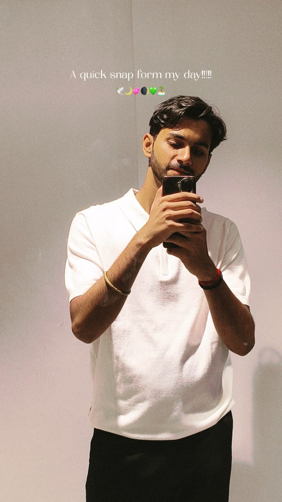
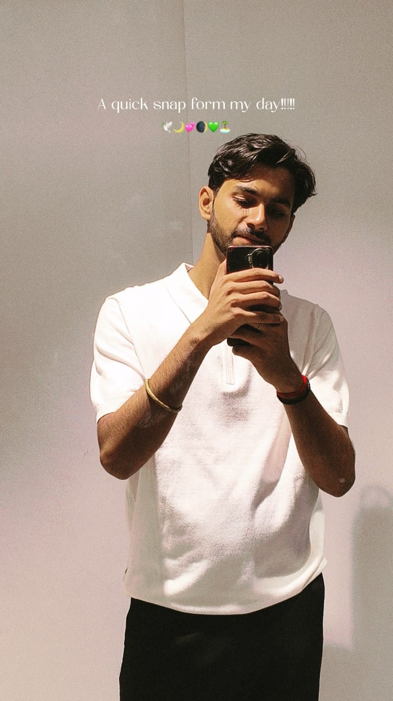

Why He’s Special
Adi is the brightest light in any room, even when surrounded by music and chaos. He makes silence feel peaceful, arguments fade into laughter, and ordinary days turn magical. He is not just a habit in my life, but a heartbeat—someone who makes me feel loved, cared for, and chosen.
With him, I want the late-night talks, the silly fights, the making ups, and the endless choosing of each other. He is my safe place, my favorite person, and my forever comfort.